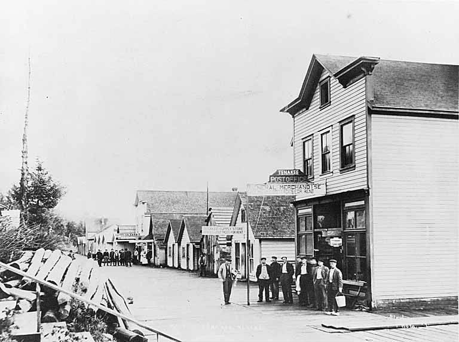
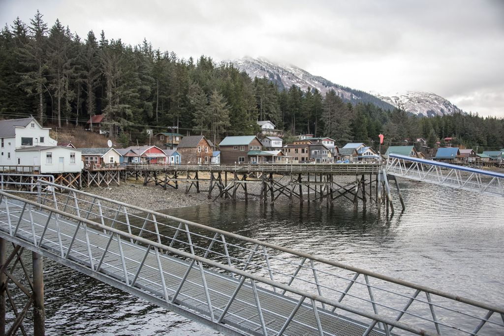

Directory / Southeast Alaska / Tenakee Springs, AK
Tenakee Springs tides — Tenakee Inlet, Chichagof Island
High and low tides for the coming week from NOAA station 9452386 (Tenakee — 57.7793, -135.2195). Times are local (AKST/AKDT). Heights are feet above Mean Lower Low Water (MLLW). Tenakee Springs is a one-trail town on the north shore of Tenakee Inlet, on the east side of Chichagof Island. The inlet opens onto Chatham Strait about 9 NM to the east, and the tide station is at the town waterfront. No road reaches Tenakee, and there are no cars in town. Homes and cabins line a single gravel path along the shore. People arrive by Alaska Seaplanes or Ward Air floatplane from Juneau, by the state ferry LeConte, or on their own boats. The city counted 116 residents in 2020, and more come in summer. The Tlingit name is T’anag̱eey. Miners and fishermen once wintered here for the hot spring, and the place was called Hoonah Hot Springs until the post office opened in 1902 under the name Tenakee to avoid mix-ups with Hoonah. Ed Snyder rowed over from Juneau with a boatload of groceries in 1899; his Snyder Mercantile is still open as the Tenakee Springs Market. The bathhouse tub room over the 106 °F spring, built in 1939, is still the center of town.
A 20-ft tide drop, first-come transient float, a three-day winter fuel dock & pack-it-out rules
The tide swing. NOAA lists 9452386 as a harmonic (reference) station, so its predictions are computed for Tenakee directly, not as offsets from Juneau. The NOAA predictions fetched 2026-11-26 show Friday, November 27, 2026 with a 17.8 ft high at 2:20 PM and then a −2.6 ft low at 9:08 PM. That is a drop of about 20.4 ft in under seven hours. Christmas Eve is bigger: 18.7 ft at 12:38 PM down to −3.7 ft at 7:24 PM, a 22.5-ft drop and the lowest tide left this year. Minus tides fall on the evenings of Nov 27–28, Dec 6–11 and Dec 21–28, all after dark. The FAA site data shows sunrise about 8:12 AM and sunset about 3:24 PM at Tenakee on Nov 27. The best daylight low this month is 2.1 ft at 3:09 PM on Saturday, Dec 19. The state’s 2022 ferry-terminal report lists the highest tide at the city dock as 18.8 ft and the extreme low as −5 ft, so plan ramp angles and dock lines for a 20-plus-foot range.
Harbor. The City of Tenakee Springs runs the small-boat harbor. The harbormaster is Deena Hand (907-736-2207, tkeharbormaster@gmail.com, VHF 16). “D” Float is the transient float: first come, first served, and the city cannot take reservations. Transient moorage is $0.80/ft a day or $5.00/ft a month plus 2% city sales tax, measured overall with outboards up. After about 10 days the monthly rate is cheaper. Shore power is 125 V/30 A at $20 a day, and you must ask the harbormaster to turn it on. If nobody is there, a rate sheet, receipt book and envelopes are outside the harbor office at the head of the approach dock so you can self-pay. The harbor’s floating concrete breakwater had emergency anchor-chain repairs by DOT&PF in 2024. Tenakee has no travelift, boatyard or verified tidal grid. The nearest lift is the 220-ton Travelift at Hoonah’s HMIC, roughly 45–50 NM by water out the inlet, up Chatham Strait and into Port Frederick.
Fuel. The city-owned Tenakee Fuel Dock (since 2004) sells gasoline, diesel and heating oil, plus lubricants, deep-cycle marine batteries and filters. The pump is on the southwest corner of the city dock. Larger boats tie up on the south-facing fenders, and skiffs filling jugs use the temporary float and walk them up the ramp. Winter hours (Labor Day to Memorial Day) are only Saturday, Monday and Wednesday, 10 AM–2 PM. In summer it is open Sunday, Monday, Wednesday, Friday and Saturday, 10–2. That means no fuel on Friday, Nov 27; the next window is Saturday, Nov 28, 10–2. Call 907-736-2288 or hail “Tenakee Fuel Dock” on VHF 16. The fuel office also fills propane tanks.
Ashore. The Tenakee Springs Market (907-736-2205) is open 11 AM–2 PM and closed Sunday and Monday. It is the only store, and it has groceries, liquor and some hardware. The post office is open weekdays 8:30–12 and 1–3:30, and Saturday 9–12:30. The bathhouse has separate hours: men 2–6 PM and 10 PM–9 AM, women 9 AM–2 PM and 6–10 PM. It runs on donations, which you can leave at the market, the New Moon Cafe or the slot in the bathhouse. Tenakee has no landfill and no regular recycling, so pack out your trash. There is no clinic either. Volunteers on VHF 16 handle emergencies, and patients go out by helicopter or plane to Juneau or Sitka.
Weather. api.weather.gov puts the harbor, the town waterfront and the whole of Tenakee Inlet out to Chatham Strait in PKZ032 Northern Chatham Strait. We also show PKZ033 Southern Chatham Strait for the run south toward Peril Strait and Angoon. In the forecasts updated at 5:19 PM Thursday, Nov 26, 2026, Northern Chatham Strait has N 15 kt and 3-ft seas this evening, turning S 10 kt late and staying light Friday, with rain and S 15 kt Friday night and patchy fog Saturday night. Southern Chatham Strait has 4-ft seas, but 7 to 8 ft near the ocean entrances Friday. Neither zone had an advisory at fetch time. Check the live forecasts below before you leave.
Computed from NOAA CO-OPS hi/lo predictions for 9452386 (2026-11-27 through 2026-12-31) and its MDAPI metadata (tidePredOffsets type R); NWS Juneau coastal waters forecast text for PKZ032 and PKZ033 and api.weather.gov active alerts for PKZ032, PKZ033, PKZ021 and PKZ013; api.weather.gov point lookups at 57.775,-135.21, 57.77,-135.22, 57.80,-135.30, 57.70,-134.80 and 57.62,-134.85 (all PKZ032; the town point itself returns land zone AKZ321); FAA WeatherCams site 166 sunrise/sunset data; City of Tenakee Springs harbor, fuel and visitor-resources pages; DOT&PF 2022 AMHS Tenakee terminal report and 2024 breakwater repair notice; USPS locator; tenakeespringsak.com community pages — all checked 2026-11-26.
Tenakee then & now
Historic

.jpg){kind=link}
Current


Official NOAA predictions Station home NOAA chart viewer View on Windy
Port Sponsor — Tenakee Springs, AK
Top placement for fuel, charters, cabins, lodges and marine businesses on Tenakee Inlet and northern Chatham Strait.
$25–$50 / month
Tide data: NOAA CO-OPS station 9452386 (Tenakee; harmonic reference station), predictions (hi/lo, MLLW, local standard/daylight time). Refreshed with each nightly build; the marine-weather snapshot time below shows the latest fetch. Times at the harbor, a short walk from downtown, can differ slightly. For nearby ports, see Hoonah tides, Sitka tides, Juneau tides and Gustavus tides.
Friday, November 27, 2026
| Tide | Time (local) | Height (MLLW) |
|---|---|---|
| High | 2:46 AM | 15.1 ft |
| Low | 8:22 AM | 3.5 ft |
| High | 2:20 PM | 17.8 ft |
| Low | 9:08 PM | -2.6 ft |
Saturday, November 28, 2026
| Tide | Time (local) | Height (MLLW) |
|---|---|---|
| High | 3:37 AM | 14.5 ft |
| Low | 9:16 AM | 4.0 ft |
| High | 3:13 PM | 16.5 ft |
| Low | 10:01 PM | -1.4 ft |
Sunday, November 29, 2026
| Tide | Time (local) | Height (MLLW) |
|---|---|---|
| High | 4:34 AM | 14.0 ft |
| Low | 10:17 AM | 4.5 ft |
| High | 4:12 PM | 15.0 ft |
| Low | 10:57 PM | 0.0 ft |
Monday, November 30, 2026
| Tide | Time (local) | Height (MLLW) |
|---|---|---|
| High | 5:36 AM | 13.7 ft |
| Low | 11:27 AM | 4.8 ft |
| High | 5:21 PM | 13.4 ft |
| Low | 11:58 PM | 1.3 ft |
Tuesday, December 1, 2026
| Tide | Time (local) | Height (MLLW) |
|---|---|---|
| High | 6:41 AM | 13.6 ft |
| Low | 12:47 PM | 4.5 ft |
| High | 6:43 PM | 12.2 ft |
Wednesday, December 2, 2026
| Tide | Time (local) | Height (MLLW) |
|---|---|---|
| Low | 1:03 AM | 2.5 ft |
| High | 7:47 AM | 13.9 ft |
| Low | 2:07 PM | 3.7 ft |
| High | 8:12 PM | 11.7 ft |
Thursday, December 3, 2026
| Tide | Time (local) | Height (MLLW) |
|---|---|---|
| Low | 2:08 AM | 3.3 ft |
| High | 8:45 AM | 14.4 ft |
| Low | 3:15 PM | 2.5 ft |
| High | 9:30 PM | 11.9 ft |
Friday, December 4, 2026
| Tide | Time (local) | Height (MLLW) |
|---|---|---|
| Low | 3:08 AM | 3.8 ft |
| High | 9:35 AM | 15.0 ft |
| Low | 4:09 PM | 1.4 ft |
| High | 10:32 PM | 12.4 ft |
Marine weather & cameras
NWS marine forecast — Northern Chatham Strait (PKZ032)
Issued 519 PM AKST Thu Nov 26 2026. Snapshot fetched 2026-11-26 21:23 AKST from NWS text product. Official zone forecast · Raw text
- .REST OF TONIGHT...N wind 15 kt becoming S wind 10 kt late. Seas 3 ft. Rain early in the evening.
- .FRI...S wind 10 kt. Seas 2 ft or less.
- .FRI NIGHT...S wind 15 kt. Seas building to 3 ft late. Rain.
- .SAT...S wind 10 kt. Seas 2 ft or less. Rain.
- .SAT NIGHT...N wind 10 kt. Seas 2 ft or less. Patchy fog.
- .SUN...N wind 15 kt. Seas 3 ft.
- .MON...E wind 15 kt. Seas 3 ft.
- .TUE...SE wind 15 kt. Seas 2 ft or less.
NWS marine forecast — Southern Chatham Strait (PKZ033)
Issued 519 PM AKST Thu Nov 26 2026. Snapshot fetched 2026-11-26 21:23 AKST from NWS text product. Official zone forecast · Raw text
- .REST OF TONIGHT...N wind 10 kt becoming SW late. Seas 4 ft. Rain early in the evening.
- .FRI...SW wind 10 kt. Seas 4 ft, except 7 ft near ocean entrances. Rain in the morning.
- .FRI NIGHT...S wind 10 kt. Seas 4 ft, except 8 ft near ocean entrances. Rain in the evening.
- .SAT...S wind 10 kt. Seas 3 ft, except 6 ft near ocean entrances. Rain.
- .SAT NIGHT...S wind 10 kt. Seas 2 ft or less, except 6 ft near ocean entrances.
- .SUN...NE wind 20 kt. Seas 4 ft.
- .MON...N wind 20 kt. Seas 4 ft.
- .TUE...SE wind 10 kt. Seas 2 ft or less.
Nearby NDBC observation — Tenakee Springs (TKEA2, Marine Exchange of Alaska, at the Tenakee waterfront)
wind 80°, 1 kt, gust 3 kt, air 40°F, 1003.1 hPa
Observation time 2026-11-26 21:02 AKST (converted to AKST). Attribution: NOAA NDBC station TKEA2. Snapshot fetched 2026-11-26 21:23 AKST.
Nearby NDBC observation — Point Craven (PCXA2, Marine Exchange of Alaska, Chatham Strait near Peril Strait, about 22 NM SSE)
wind 10°, 4 kt, gust 5 kt, air 42°F, 1003.2 hPa
Observation time 2026-11-26 21:02 AKST (converted to AKST). Attribution: NOAA NDBC station PCXA2. Snapshot fetched 2026-11-26 21:23 AKST.
Nearby NDBC observation — Rocky Island (RIXA2, Marine Exchange of Alaska, eastern Icy Strait, about 25 NM NNE)
wind 360°, 13 kt, gust 16 kt, air 39°F
Observation time 2026-11-26 21:02 AKST (converted to AKST). Attribution: NOAA NDBC station RIXA2. Snapshot fetched 2026-11-26 21:23 AKST.
Harbor webcams
- FAA WeatherCams — Tenakee Springs (four cameras at the Tenakee seaplane base looking north, east, south and west over the town, the floats and Tenakee Inlet; the quickest look at wind, chop and ceiling on the inlet; link only, not embedded)
- FAA WeatherCams — Hoonah (Port Frederick and the north end of the route via Icy Strait)
- FAA WeatherCams — Angoon (the Chatham Strait side to the south; the east camera is in maintenance)
We checked the FAA camera-site data on 2026-11-26 around 9:15 PM AKST. All four Tenakee Springs cameras (site 166) had posted images within the previous ten minutes, and none was marked in maintenance. All four Hoonah cameras (418) were active. At Angoon (251), camera 2 (east) is in maintenance. FAA site data shows sunrise about 8:12 AM and sunset about 3:24 PM AKST at Tenakee on Nov 27, so expect dark frames on winter evenings. We found no other free public camera at the harbor or dock. Businesses with a public cam: email us and we will link it.
Tenakee Springs boater notes (official links)
- City of Tenakee Springs — Harbor: Harbormaster Deena Hand, Tenakee Harbor Department, PO Box 52 (907-736-2207, tkeharbormaster@gmail.com, VHF 16). D Float is transient, first come first served, with no reservations. $0.80/ft a day or $5.00/ft a month plus 2% sales tax; 30-amp power is $20 a day on request. Self-pay envelopes are at the harbor office at the head of the approach dock. Harbor rules are in municipal code Title 15.
- City of Tenakee Springs — Fuel: Tenakee Fuel Dock on the southwest corner of the city dock (907-736-2288, tenakeefuel@gmail.com, VHF 16 “Tenakee Fuel Dock”). Winter: Sat, Mon and Wed 10 AM–2 PM. Summer: Sun, Mon, Wed, Fri and Sat 10–2. Gas, diesel, heating oil, lubricants, deep-cycle batteries and filters; propane fills and heating-oil delivery.
- City of Tenakee Springs — Visitor & resident resources: bathhouse etiquette and donations, the “Rules of the Path” (10 mph, pedestrians first, vehicles no wider than 50 inches), no landfill or recycling (pack it in, pack it out), and emergency contacts (Alaska State Troopers 907-465-4000 weekdays 8–5, or 907-262-4453). The city office is at 907-736-2207, citytke@gmail.com.
- DOT&PF 2022 AMHS terminal report — Tenakee: the city dock and ferry facility were rebuilt in 2020–21 with a fuel station, dock crane, support float and a transfer bridge for LeConte-class ferries. Tidal data at the dock: highest tide 18.8 ft, mean high water 13.7 ft, extreme low −5 ft.
- Alaska Seaplanes — Tenakee Springs: scheduled floatplane service from Juneau, up to three times a day in summer and twice in winter, weather permitting, plus charters (outstation 907-736-2247). The Alaska Marine Highway LeConte calls from Juneau on a schedule that changes by season, so check the AMHS schedule; reservations 800-642-0066.
- ADF&G 2026 Southeast shore-based processors by port: no plant is listed in Tenakee Springs. The nearest is Hoonah Cold Storage (F9173) in Hoonah. Salmon and crab canneries worked Tenakee Inlet from 1916 until 1974, and commercial crabbing and fishing are still part of the local economy.
- NOAA ENC chart viewer: Tenakee Inlet and Chatham Strait. NOAA has canceled the old raster charts for this area (including 17320), so use the ENC viewer or current ENC-based charts. We link to NOAA’s viewer and do not host charts.
Local marine & shore directory
Verified public listings only. List free · Get featured
Marine services
Moorage & marinas
Seafood processors & buyers
Fuel docks
Shipyards & haul-outs
Boat repair & mechanics
No verified listing yet — list your business free.
Marine suppliers & chandleries
Electronics sales & installation
No verified listing yet — list your business free.
Welding & fabrication
No verified listing yet — list your business free.
Canvas & upholstery
No verified listing yet — list your business free.
Surveyors
No verified listing yet — list your business free.
Towing & salvage
No verified listing yet — list your business free.
Ice & bait
No verified listing yet — list your business free.
Fishing charters
Ashore for boaters
Groceries & provisioning
Hardware
Liquor stores
Laundromats
No verified listing yet — list your business free.
Showers
Lodging
Restaurants
Medical clinics
Pharmacies
No verified listing yet — list your business free.
Post office & shipping
Airport & floatplane
Propane
Auto & truck rental
No verified listing yet — list your business free.
We checked these listings on 2026-11-26 against public sources: the City of Tenakee Springs harbor, fuel and visitor resources pages; the Tenakee Springs community site (Business Association members, where to stay, services and hours); the ADF&G 2026 Southeast shore-based processor map; the DOT&PF 2022 AMHS terminal report; the USPS locator; Alaska Seaplanes; Ward Air; Fishing Bear Alaska; and the Tenakee Historical Collection. Tenakee has no seafood processor, boatyard, welder, electronics shop or clinic that we could verify, so the processor, haul-out and clinic rows point to the nearest ones in Hoonah. We left out the Tenakee Hot Springs Lodge because its website (tenakeehotspringslodge.com) did not load on 2026-11-26. List your business free: email J.L. Miller.
Local news — Tenakee Springs, AK
Plain links to local outlets. Always check the source for the latest. Local news partners welcome.
Free weekly tides & marine weather
Get a short email for your port. We do not sell your email. Privacy.
Mailing list powered by Buttondown.
Boating gear on Amazon
As an Amazon Associate I earn from qualifying purchases.
Helpful search links for common gear. Prices and availability are on Amazon.
Other Alaska ports
- Gustavus tides
- Hoonah tides
- Pelican tides
- Elfin Cove tides
- Craig tides
- Haines tides
- Skagway tides
- Juneau tides
- Yakutat tides
- Sitka tides
- Petersburg tides
- Wrangell tides
- Ketchikan tides
- Cordova tides
- Prince William Sound ports overview
- Valdez tides
- Whittier tides
- Kenai tides
- Homer tides
- Kodiak tides
- Dutch Harbor tides
- Unalaska tides
Sources
- Tide predictions: NOAA CO-OPS station 9452386 Tenakee via the CO-OPS data API (hi/lo, MLLW, local time); station metadata from the CO-OPS MDAPI (harmonic reference station)
- Marine forecasts: NWS Juneau coastal waters text products PKZ032 and PKZ033; zones confirmed with api.weather.gov point lookups on 2026-11-26 (no active alerts for PKZ032, PKZ033, PKZ021 or PKZ013 at fetch time)
- NDBC observations: TKEA2 Tenakee Springs, PCXA2 Point Craven and RIXA2 Rocky Island (Marine Exchange of Alaska). The refresh shows a station as unavailable when its latest report is more than a day old
- Harbor, fuel & town: City of Tenakee Springs harbor, fuel, visitor-resources and home pages; DOT&PF 2022 AMHS Tenakee terminal report; State of Alaska online public notice for the 2024 Tenakee floating breakwater emergency repairs; tenakeespringsak.com community pages (services and hours, FAQ, history, bathhouse, business association) — all checked 2026-11-26
- FAA WeatherCams public camera pages for Tenakee Springs (site 166), Hoonah (418) and Angoon (251) — checked 2026-11-26
- ADF&G 2026 Southeast Alaska shore-based processors by port (no Tenakee plant listed)
- History: City of Tenakee Springs (Tlingit name, 2020 census, 1971 incorporation); Tenakee Springs history (Hoonah Hot Springs, 1902 post office, 1899 Snyder Mercantile, canneries 1916–1974); Tenakee Historical Collection
- Directory:
data/businesses.csvrows for port_slug=tenakee-springs, each with its public source URL (verified 2026-11-26) - Photos: John M. Blankenburg, about 1901 (public domain, University of Washington Libraries Special Collections), and Gillfoto, 2016 (CC BY-SA 4.0), via Wikimedia Commons. Graphics: original Pacific Tides artwork (Tenakee Inlet mast, steaming hot-spring tub, Dungeness crab).